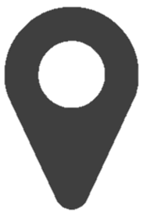
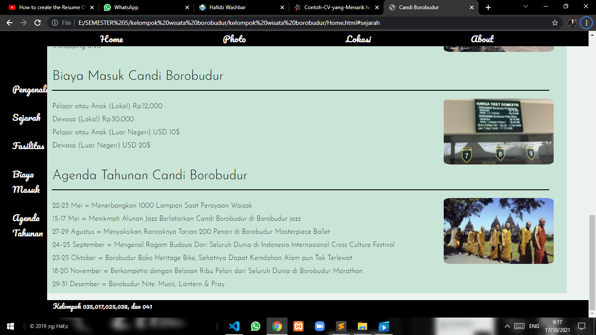

Muhammad Irgi Hafidz
 Ipuh, Mukomuko, BengkuluStudent from University of Technology Yogyakarta
About Me
Saya lahir dan dibesarkan di bengkulu, tepatnya kecamatan ipuh kabupaten mukomuko. Saya benar-benar terinspirasi dengan bisnis yang dikembangkan melalui teknologi serta aplikasi. Saya ingin sekali memiliki kesempatan untuk mengerjakan berbagai proyek, dengan agensi, perusahaan, atau bahkan individu. Saya sangat tertarik dengan adalah pekerjaan kustom seperti branding, desain web, desain UI/UX, desain cetak & desain offline apa pun.
Saya telah memiliki beberapa karya dalam pemrograman web. Beberapa dari karya saya dapat dilihat di menu Portfolio. Saya memiliki Riwayat pendidikan Formal dan saya sudah mencantumkan di menu Education. Jika perlu menghubungi saya maka silahkan cek menu Contact saya selalu mencantumkan kontak saya di setiap project yang saya buat.
|
Skills
|
Hobbies
|
|
Public Speaking
|
|

- Portfolio
- Education
- Contact
-
Project 1Web Informasi Pasar SenthirSaya Pernah membuat Aplikasi Informasi seputar Pasar Senthir dengan lengkap. Metode Pengumpulan data yang saya lakukan yaitu mewawancarai mulai dari pelanggan, pedagang dan pengurus Pasar Senthir. Setelah mendapat Informasi yang lengkap dari Narasumber tadi saya langsung menulis semua informasi yang didapat ke dalam web informasi pasar Senthir yang saya buat. Namun, Web ini masih belum publish!

-
project 2Hafidz WashbarHafidz Washbar adalah project tugas akhir saya dalam mata kuliah Pemrograman Web di semester 4. Saya membuat peroject ini menggunakan PHP dan sejumlah database agar pelanggan serta admin dapat memanipulasi data. Fitur yang ada pada project ini yaitu daftar member, login member, edit data member dan hapus member. Saya juga melengkapi project ini dengan fitur tentang saya agar ada yang bisa menghubungi saya jika ada kendala dalam project ini dan ada sejumlah foto di galeri. Saya juga memakai API data covid setiap provinsi agar dapat berguna bagi orang-orang untuk mengetahui data covid di provinsi mereka. Project ini sudah saya publish dengan link https://hafidzwashbar2.000webhostapp.com/index.php .

-
project 3Wisata Candi BorobudurProject ini sebenarnya berkonsep sama dengan Web Informasi Pasar Senthir yang saya buat sebelumnya. Akan tetapi untuk project yang ini saya menerapkan Informasi Terbaru terus-menerus tentang Wisata Candi Borobudur ini dimulai dari jam buka, agenda acara, biaya masuk, pengenalan dan sejarah dari Wisata Candi Borobudur. Saya juga melengkapi dengan video dan photo yang menarik untuk dilihat oleh wisatawan. Di project ini saya juga meletakkan map untuk para wisatawan yang baru ingin ke Wisata Candi Borobudur. Project ini sudah sempat saya publish namun dikarenakan ada perbaikan jadi saya tarik dulu project ini. 
-
Project 4Aplikasi database IT WorkerSaya Pernah membuat Aplikasi Informasi tentang IT worker menggunakan bahasa java dan aplikasi netbeans dimana aplikasi ini adalah untuk menyimpan data dari pegawai IT dan Aplikasi ini akan otomatis mengisi gaji pegawai sesuai dengan posisi dalam pekerjaannya di Perusahaan. Aplikasi ini terhubung dengan database MySQL untuk menyimpan data - data yang dimasukkan. Namun, User juga dapat melihat, menambah, menghapus dan mengedit data sesuai dengan keinginannya. Project ini saya kerjakan dalam waktu yang singkat namun hasilnya sudah dapat dikatakan memuaskan.

-
Project 5Aplikasi Socket ProgrammingAplikasi yang saya buat ini sedikit sama konsepnya dengan project 4, karena aplikasi yang saya buat ini menggunakan bahasa pemrograman java dan menggunakan aplikasi netbeans. Aplikasi Socket Programming ini merupakan aplikasi yang dapat mengirim pesan dan membalas pesan antara server dan client menggunakan ip address yaitu xampp. Saya membuat Aplikasi ini pada semester 3.